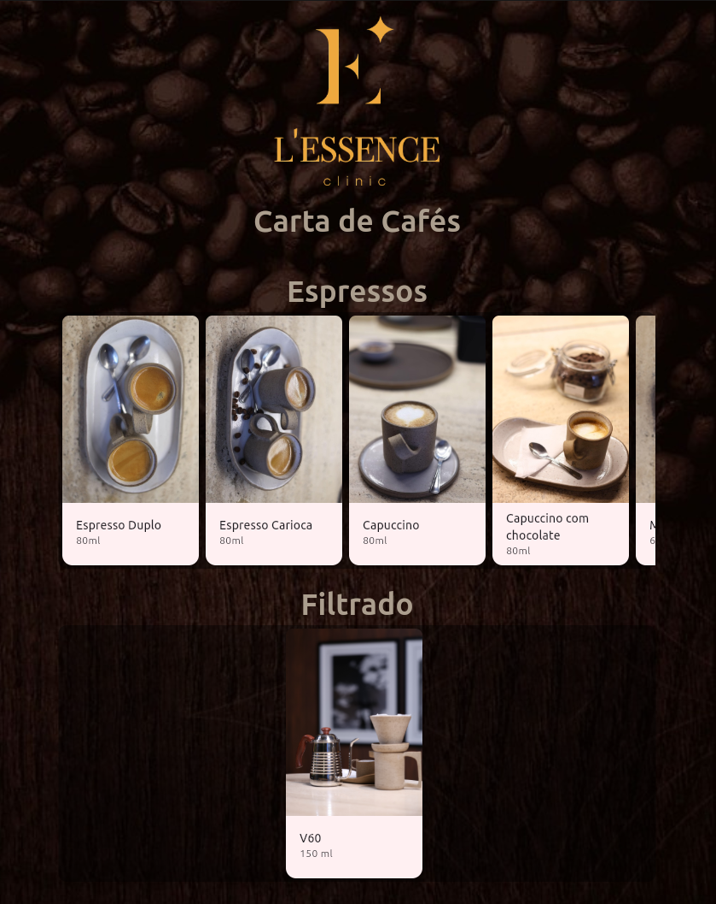
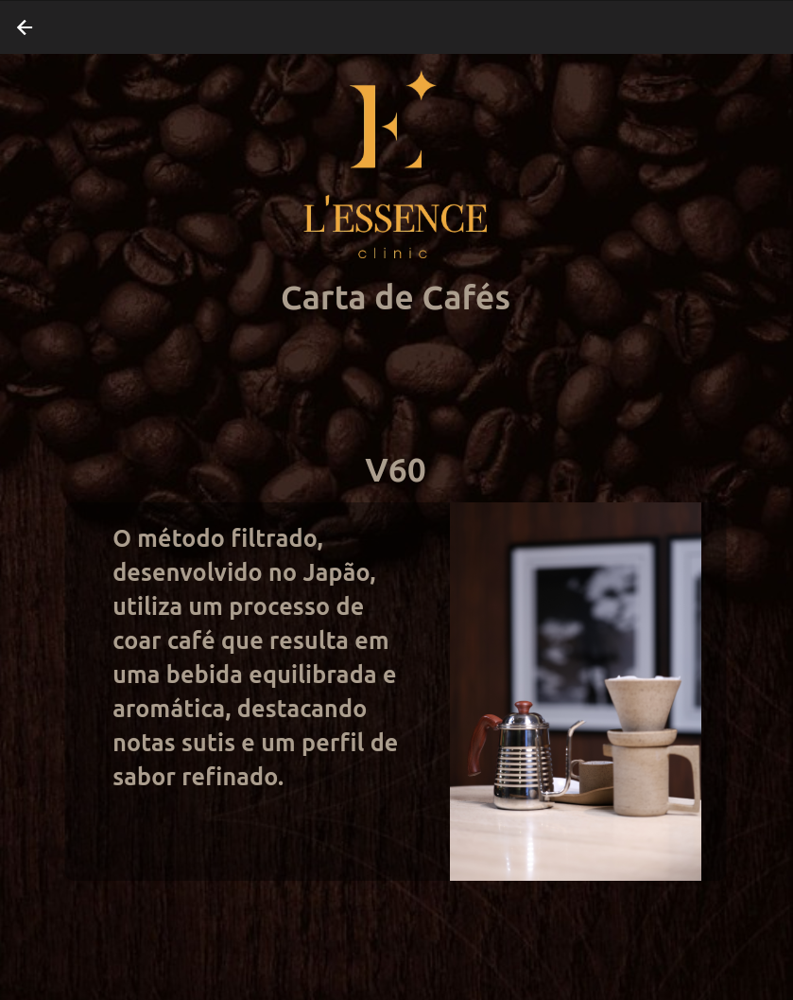

<a [routerLink]="['/']" class="botao-voltar">
    <span class="material-icons">arrow_back</span>
    <p>Voltar</p>
</a>
<div class="paginas-lessence">
    
    <h1>Home page</h1>
    
    <h1>Café selecionado</h1>
    
</div>